./code --poetry
See code-poetry.com
Intro text here
Book
Images of book
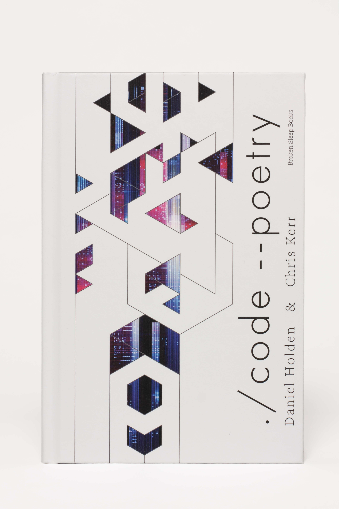
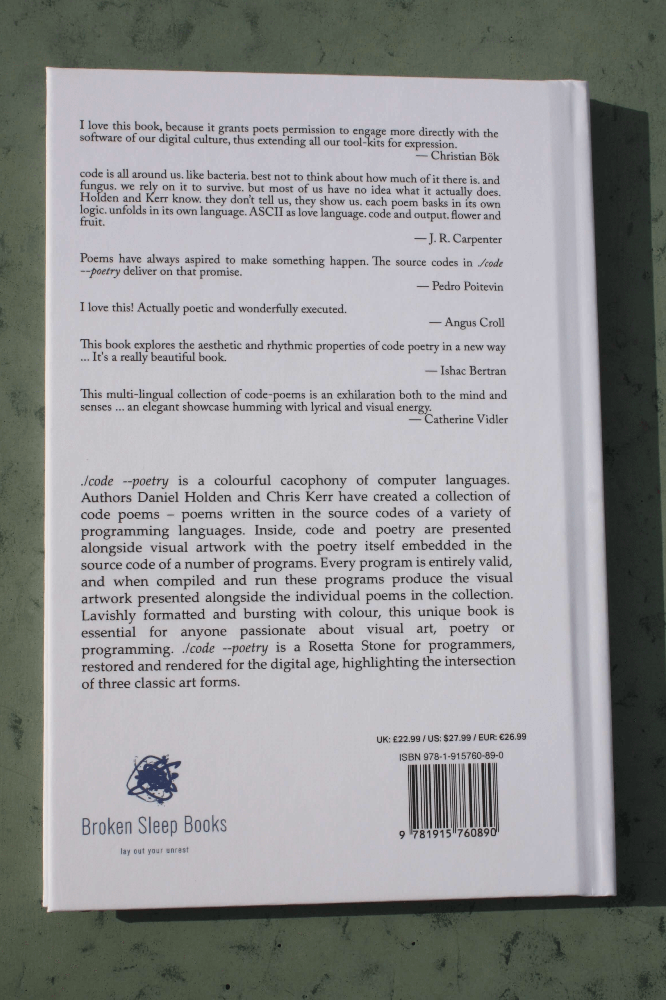
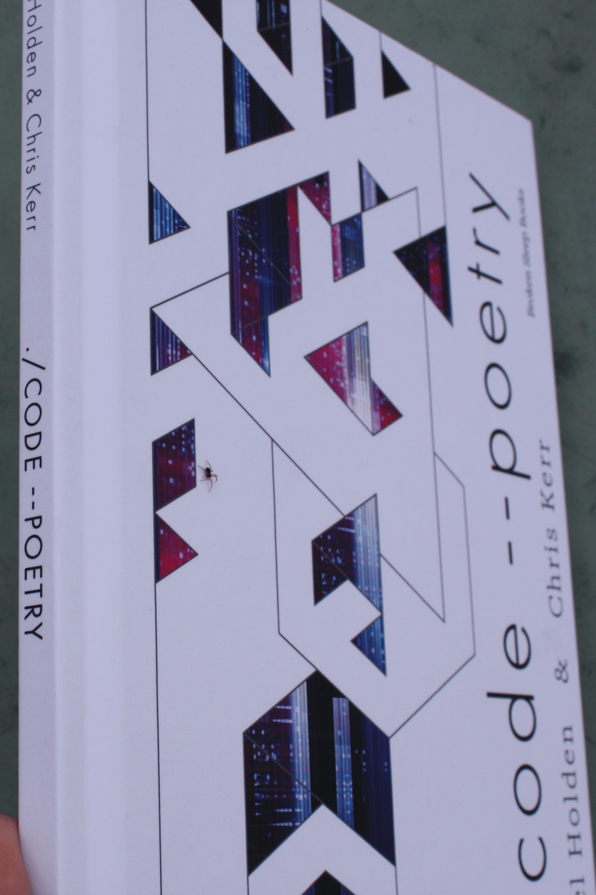
Inside the book
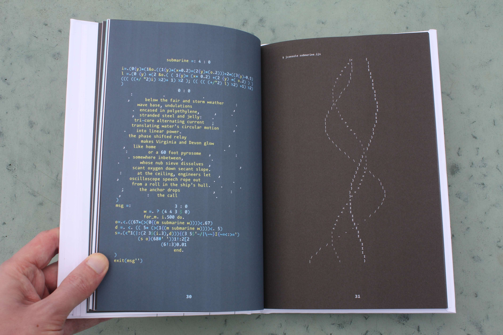
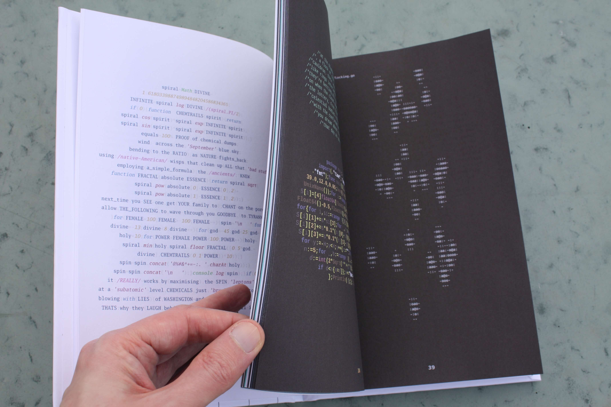
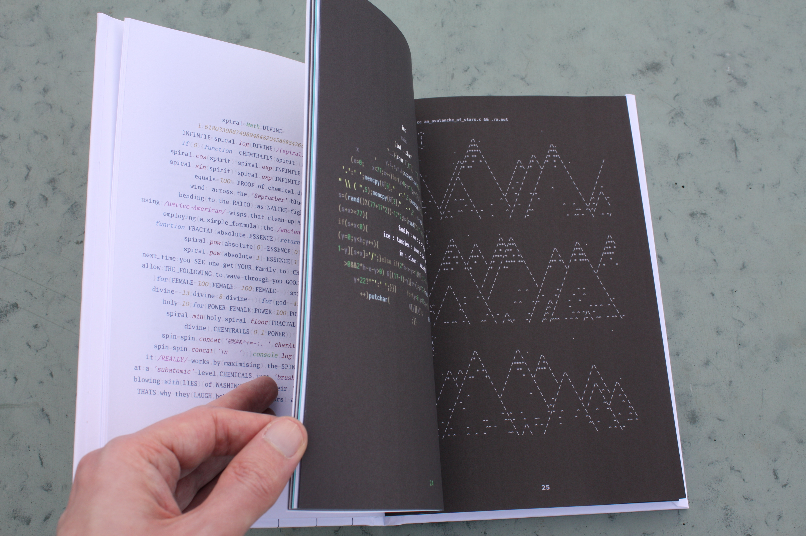
Website
Images of code-poetry.com
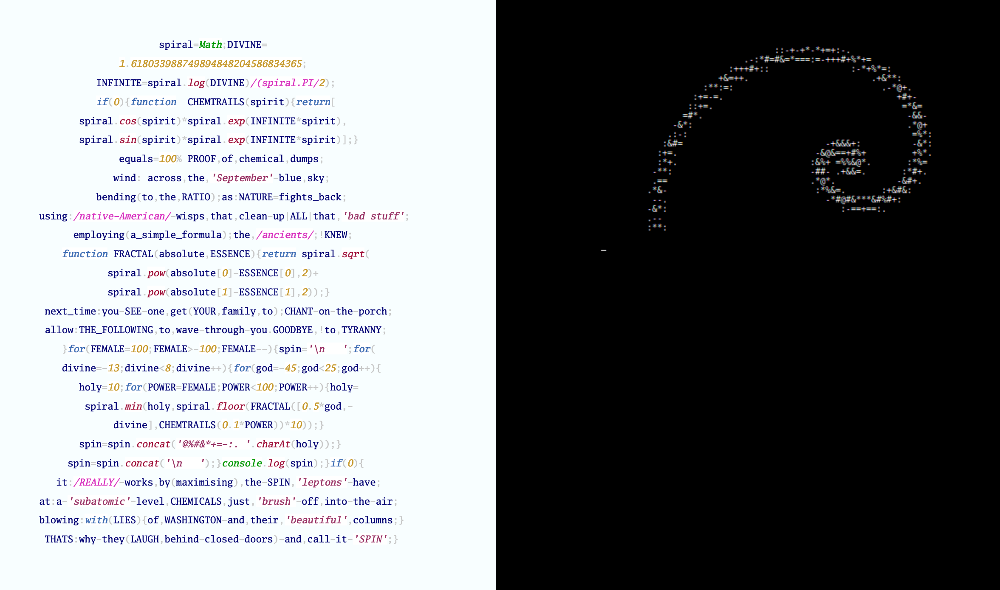
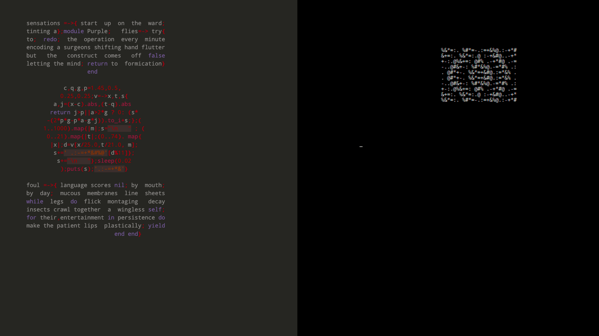
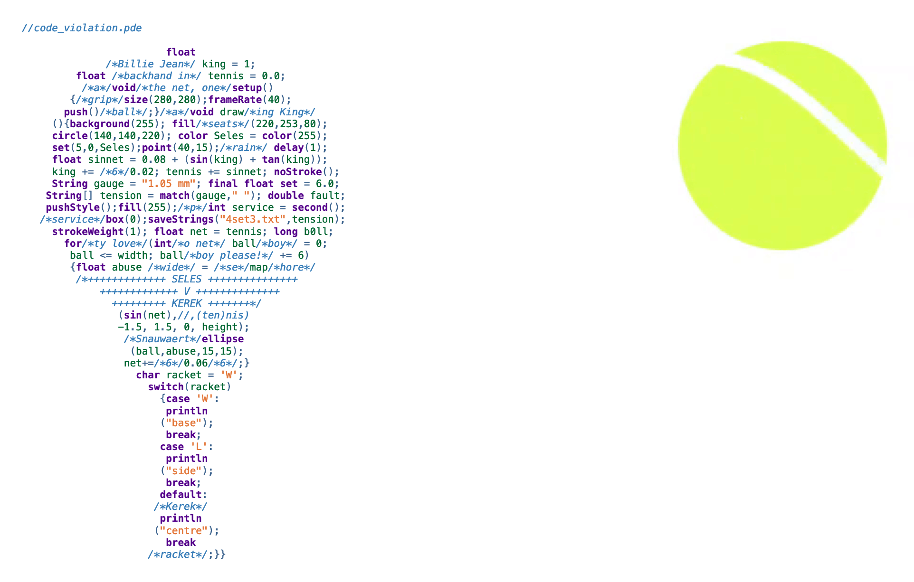
Intro to the project, with prominent link to code-poetry.com
Content from our publishers
Youtube launch video: https://www.youtube.com/watch?v=1QWaZ665Wh0
Interview (Broken Sleep Books): https://www.brokensleepbooks.com/post/interview-with-daniel-holden-and-chris-kerr
Sidekick Barotrauma spotlight: https://sidekickbooks.com/booklab/2018/12/spotlight-barotrauma-chris-kerr-daniel-holden.html/
Commissioned code poems
In 2019, the media company Welcome to the Jungle commissioned four new code poems, which were later included in ./code --poetry (2023 edition):
Strauhof Gallery Exhibition November 2024 to January 2025
Exhibition photos
Art exhibition: https://strauhof.ch/ausstellungen/maschinenpoesie/
Reviews of Strauhof exhibition that obliquely mention code poetry:
https://zuerich24.ch/articles/275312-vom-schreiben-der-maschine
https://zuercher-museen.ch/museen/strauhof/maschinenpoesie
Credit photographer
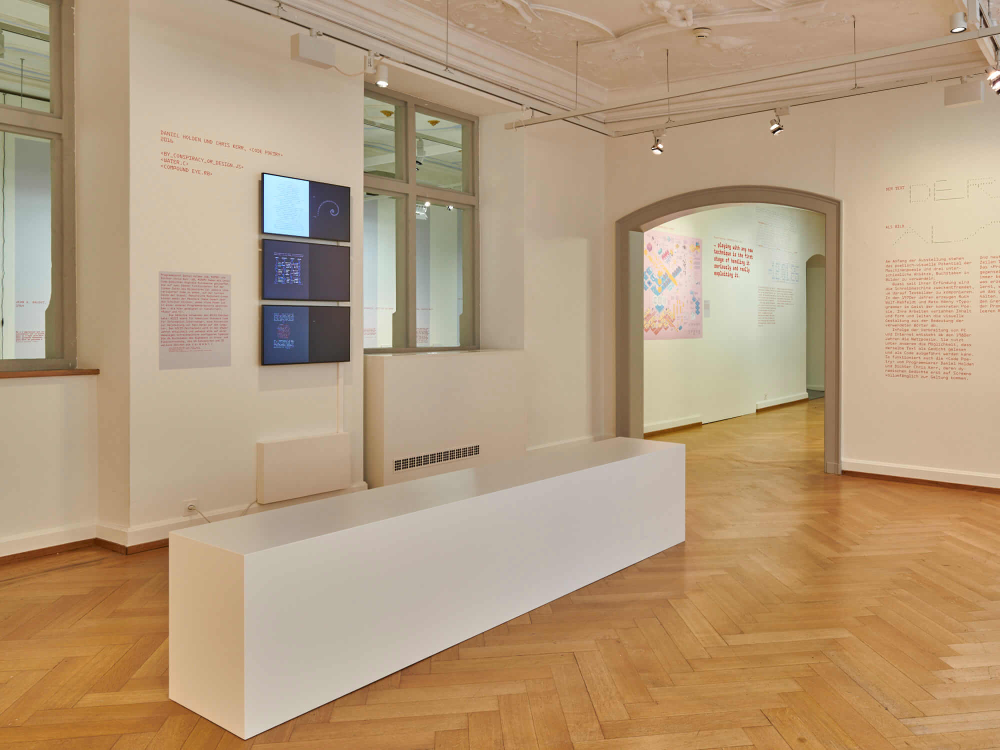
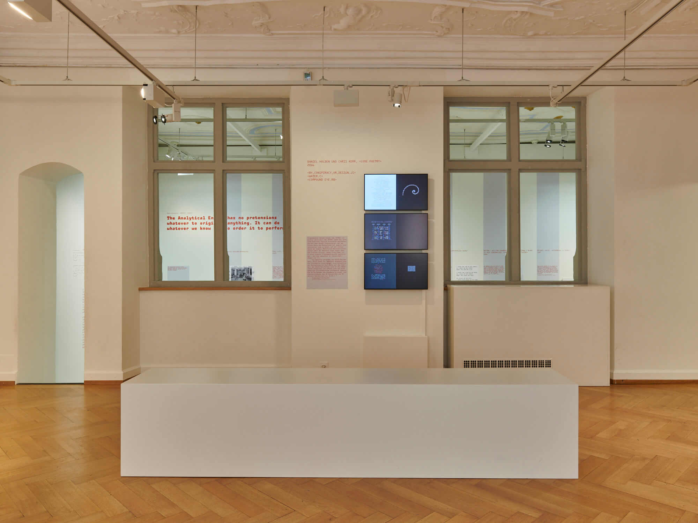
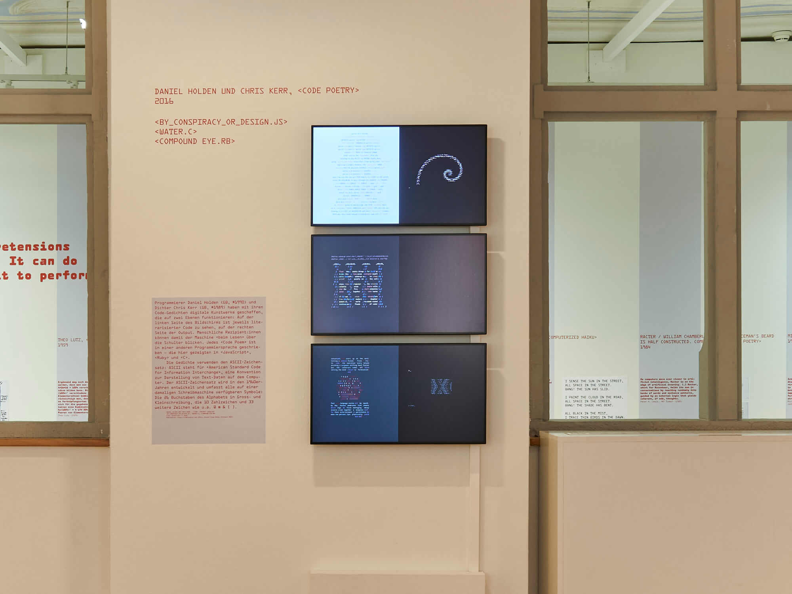
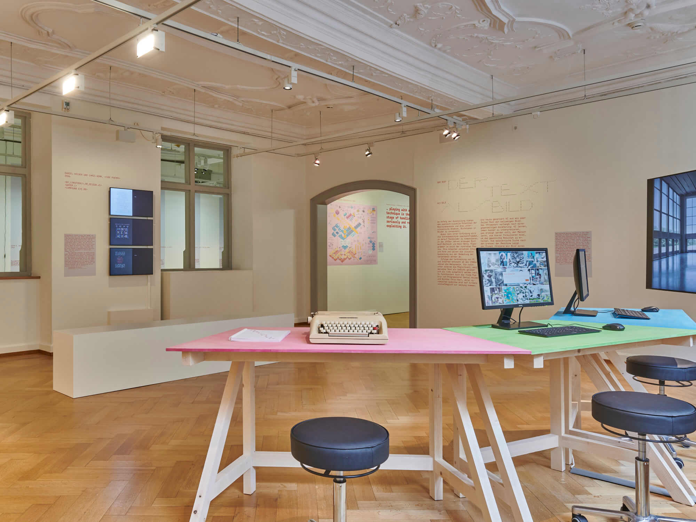
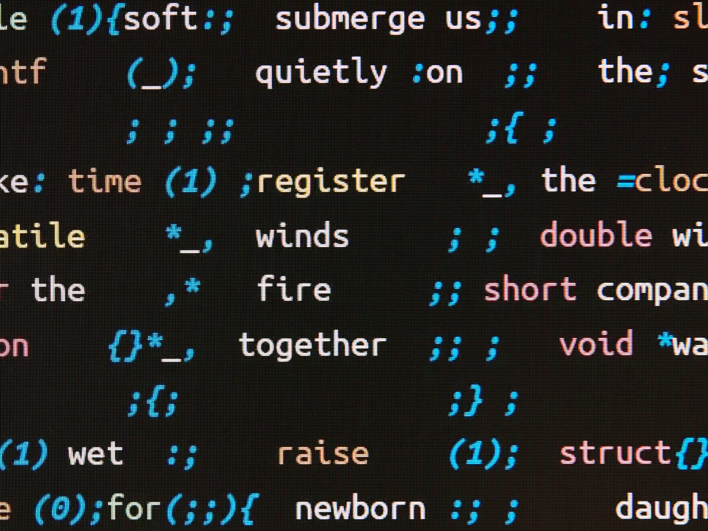
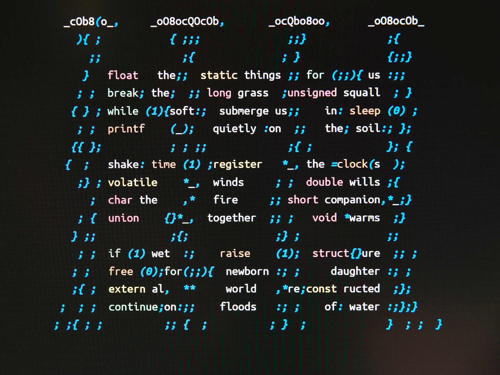
Lectures on ./code --poetry by the authors
Hamburg: https://lecture2go.uni-hamburg.de/l2go/-/get/v/62271
Oslo: https://www.oslopoesi.no/deltakere-oslo-flermediale-2024/chris-kerr-uk
Trondheim: https://www.ntnu.no/kalender/detaljer/-/event/902e7ad4-9c7a-3516-8791-92ea6202efa4
References to ./code --poetry
Intro to references
Academic articles
“Unter der Oberfläche?
Programmierte Schriftlichkeit in digitaler Lyrik” by Wiebke Vorrath in Schriftlichkeit: Aktivität, Agentialität und Aktanten der Schrift (transcript Verlag, 2022) pp. 62-63.
https://www.degruyter.com/document/doi/10.1515/9783839460924-003/pdf
Alternative link: https://uplopen.com/books/3821/files/c545aa5d-4612-49c4-b981-e1e158612bc9.pdf
Echo and Narcissus article by Drymonitis: https://icmc2022.wordpress.com/wp-content/uploads/2022/09/icmc2022-proceedings.pdf
Ludovica Polo academic article: https://doi.org/10.57576/ocula2024-9
Drymonitis’ thesis: https://www.open-access.bcu.ac.uk/14314/1/Alexandros%20Drymonitis%20PhD%20Thesis%20published_Final%20version_Submitted%20Dec%202021_Final%20Award%20Jan%202023.pdf
Mentioned in Live Coding (Cambridge University Press): https://www.cambridge.org/core/journals/organised-sound/article/live-coding-poetry-the-narrative-of-code-in-a-hybrid-musicalpoetic-context/AF7EAF399DC50B2F7786391D227ACD9D
2023 academic article: https://research.vu.nl/ws/portalfiles/portal/337784644/The_Art_of_Creating_Code-Based_Artworks.pdf
Wiebke’s academic article: https://www.degruyter.com/document/doi/10.1515/9783839460924-003/html
Brasilia “Arte Computacional: O que reter, como reter? O que guardar, como guardar?”: http://icts.unb.br/jspui/bitstream/10482/44893/1/2022_Te%C3%B3filoAugustodaSilva.pdf
PhD thesis
University syllabuses
https://www.dipae.ac.cy/archeia/pistopoiimena_programmata/comments_on_eec_report/07.14.327.064_comments_on_eec_report.pdf - Cyprus uni
Online articles
“What is Code Poetry?” by Daniel Temkin in Hyperallergic, 21 August 2023 https://hyperallergic.com/835123/what-is-code-poetry-daniel-holden-chris-kerr/
Code poetry: Poems written in programming languages by Nađa Božović, 8 January 2018 https://www.popwebdesign.net/popart_blog/en/2018/01/code-poetry-poems-written-in-programming-languages/
Same content in German?
“Code-Poesie: Gedichte die in Programmiersprachen geschrieben sind” by Kristina Dosen, 4 June 2018 https://www.popwebdesign.de/popart_blog/de/2018/06/code-poesie-gedichte-die-in-programmiersprachen-geschrieben-sind/
Mentioned in “Practising Ada’s ‘Poetical Science’” by Kari Kraus, 18 April 2017 - Huffington Post https://www.huffpost.com/entry/practicing-adas-poetical-science_b_58f4e31fe4b048372700da1f
“Code poetry challenges the meaning of creativity and visual arts” by Madison Moore - Software Development Times, February 16 2017
The aesthetics of source code: https://source.enframed.net/ideals/practice-programmers/
Deus ex machina (French): https://www.revuedeparis.fr/deus-ex-machina-de-l-anthropocentrisme-au-transhumanisme/
Ekrits: https://ekrits.jp/2020/01/3201/
Interviews
Print book
https://www.amazon.co.uk/Python-Grammar-Learn-speak/dp/B0B1CG9J41
Print book (self-published)
References ./code –-poetry on p. 25
Print magazine
P code magazine (Japan): https://p-code-magazine.github.io/downloads/p-code-magazine-1.pdf
Including photos of turing machine from code-poetry.com: https://archive.transbooks.center/p-code-magazine-001
Shoutouts and blog posts
Included in Backslash Lit’s Inspo https://backslashlit.com/inspo/
Mentioned on Pixel Envy by Nick Heer https://pxlnv.com/linklog/code-poetry/
Mentioned by Krzysztof Siejkowski, author of codepoems.xyz https://codepoems.xyz/about/
The Good Men Project: https://goodmenproject.com/technology/e-poetry-and-its-cyber-branches/
Web curios: https://webcurios.co.uk/webcurios-28-10-22/
Poetry takes over tech - https://maried.substack.com/p/poetry-takes-over-tech
Podcast interview
https://open.spotify.com/episode/4cRR1WGrQyGlbj7hhXo6Lm?nd=1&si=AeyoKDtFQnG4yMpQCmvDyA
Conference presentations by third-parties
Keynote: On the Aesthetics of Code - Sy Brand - CPPP 2021 https://www.youtube.com/watch?v=CkGqINHZit0
“Is code poetry the new avant garde” - talk by Laura Caccia, TedX London https://www.youtube.com/watch?v=OPyS5dVOpp4